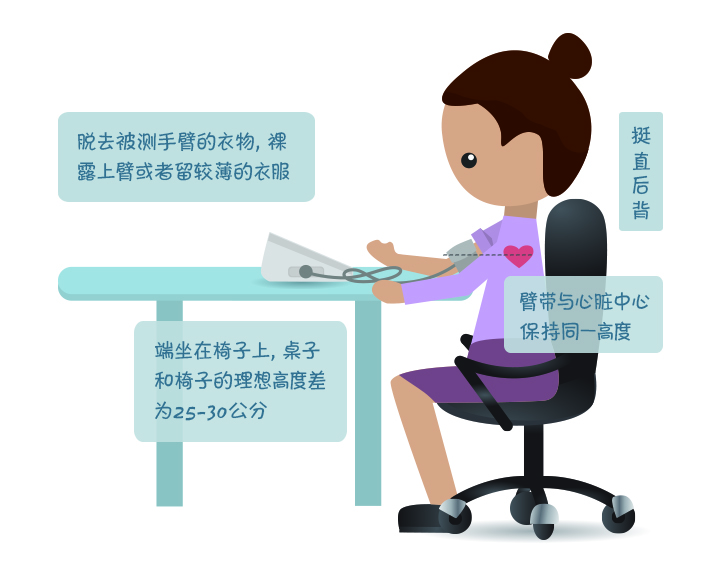
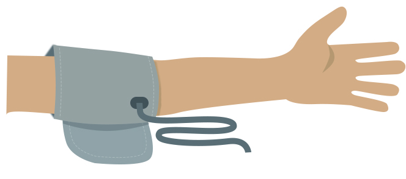
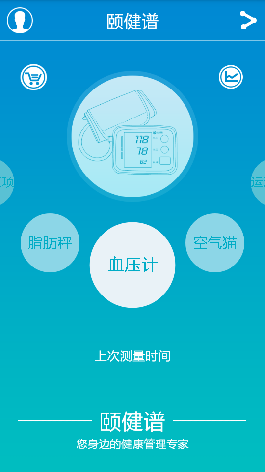
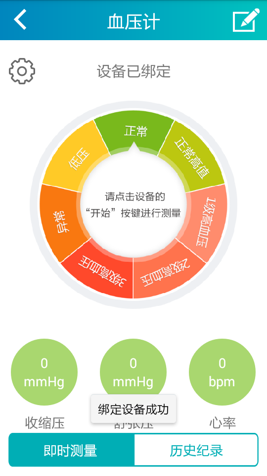
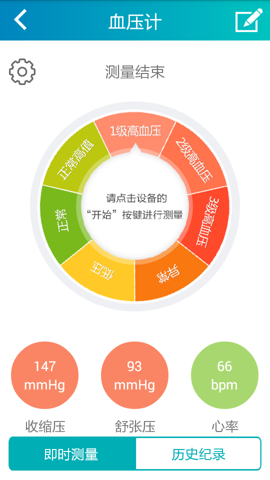
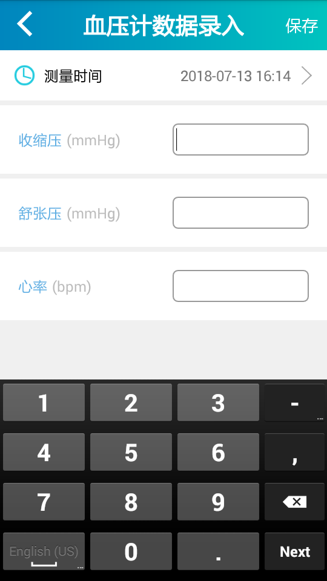

血压计操作使用指南
臂式电子血压计使用方法：

使用电子血压计前，请脱去被测手臂上较厚的衣服，裸露上臂或只留较薄的衣物
将臂式血压计臂带至于右手上臂（臂带下边缘位于肘关节之上1-2cm）紧贴肌肤缠绕，应位于手臂的内侧并向下指向手部方向，保证空气管位置局中（中指延长线方向），臂带的中心与心脏应保持在同一高度
首先建议使用右臂测量，如在无法使用右臂的情况下，可使用左臂测量，此时空气管居手臂内侧，肘部不要压迫空气管，臂带中心与心脏应保持在同一高度

“颐健谱”电子血压计绑定步骤：
在主页点击血压计设备，进入血压计绑定页面

点开血压计蓝牙按钮，搜索设备
页面弹出设备名称，点击设备名称进行绑定
绑定成功

血压测量：
按开设备“蓝牙”按钮，打开血压计，自动连接上血压计进行测量
测量时，转盘转动，测量完毕，上传血压值，指针指向血压测量结果，血压、心率偏低偏高显示为红色，正常显示为绿色

可手动录入测量后的血压值
可查看血压测量后的历史记录

测量注意事项：
测量时间：因为血压总处在变化中并有一定的规律，大多数人血压有明显的昼夜律性变化，白天活动状态血压较高，夜间入睡后血压较低。白天血压有两个高峰期，既早晨6-8时及晚上18-20时。一般应在这两个时间段测量血压，了解一天中血压的最高值
测量前准备：测量血压前应安静休息15-30分钟，排空膀胱，避免升血压因素的刺激，列如饮酒、茶、咖啡、吸烟、紧张、焦虑等
测量时，不要讲话，可将未被测量的手放在大腿上，手心向上，自然放松